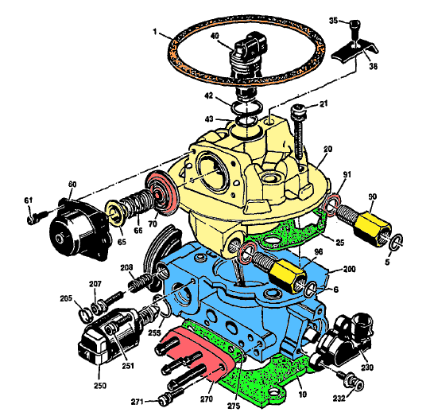

Go Home
Site Map
Go Home
Site Map
700 series TBI

Source: GM 22P b/w image. Ogre added color.
|
Model 700 Thottle Body
(1987-1988 Fiero LR8 2.5l VIN R) |
|
|---|---|
|
1 |
GASKET. AIR CLEANER |
|
5 |
SEAL. FUEL FEED PIPE O-RING |
|
6 |
SEAL. FUEL RTN PIPE O-RING |
|
10 |
GASKET. TBI |
|
20 |
FUEL METER ASM. |
|
21 |
SCREW, FUEL METER BODY-THROTTLE BODY ATTACH |
|
25 |
GASKET, METER BODY TO THROTTLE BODY |
|
35 |
SCREW, INJECTOR RETAINER |
|
36 |
RETAINER, INJECTOR |
|
40 |
INJECTOR, FUEL |
|
42 |
O-RING. FUEL INJECTOR-UPPER |
|
43 |
O-RING, FUELINJECTOR-LOWER |
|
60 |
COVER ASM, PRESSURE REGULATOR |
|
61 |
SCREW, PRESSURE REGULATOR ATCH |
|
65 |
SEAT, SPRlNG |
|
66 |
SPRING, PRESSURE REGUlATOR |
|
70 |
DIAPHRAGM ASM, PRESSURE REGUlATOR |
|
90 |
NUT, FUEL INLET |
|
91 |
SEAL, FUEL NUT |
|
96 |
NUT, FUEL OUTLET |
|
200 |
THROTTLE BODY ASM |
|
205 |
PLUG, IDLE STOP SCREW |
|
207 |
SCREW & WASHER ASM, IDLE STOP |
|
208 |
SPRING, IDLE STOP SCREW |
|
230 |
SENSOR, THROTTLE POSITION |
|
232 |
SCREW & WASHER ASM, TPS ATCH |
|
250 |
VALVE, IDLE AIR CONTROL ATCH |
|
251 |
SCREW, IDLE AIR CONTROL VALVE ATCH |
|
255 |
O-RING, IDLE AIR CONTROL VAlVE |
|
270 |
TUBE MODULE ASM |
|
271 |
SCREW ASM, TUBE MODULE ASM |
|
275 |
GASKET, TUBE MODULE ASM |
| What | Torque |
|---|---|
| 90 & 96 | 20 ft/lb (27 Nm) |
| 21 | 53 in/lb (6 Nm) |
| 35 | 27 in/lb (3 Nm) |
| 61 | 22 in/lb (2.5 Nm) |
| 232 | 18 in/lb (2 Nm) |
| 251 & 271 | 28.0 in/lb (3.2 Nm) |
| TBI to manifold bolts | 18 ft/lb (25 Nm) |
Torque Source: GM 88 Fiero SM